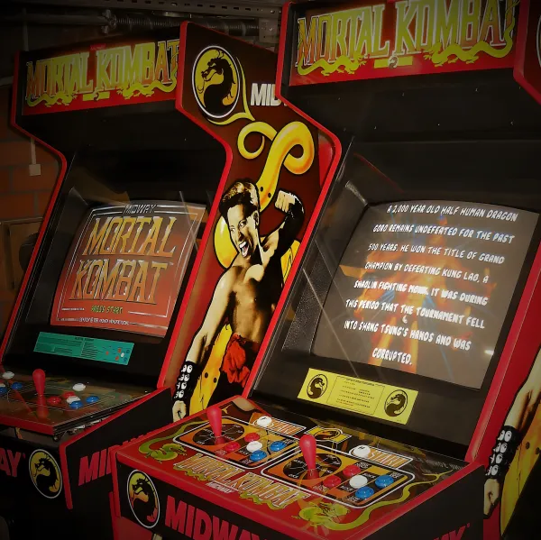
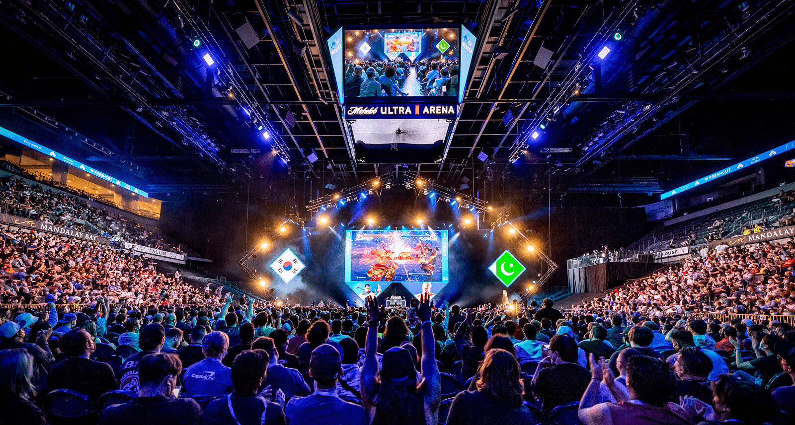
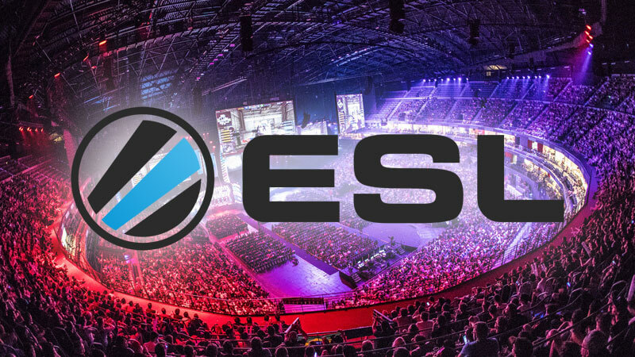
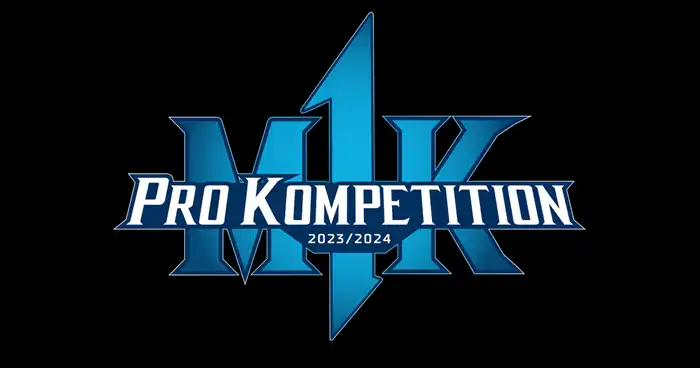
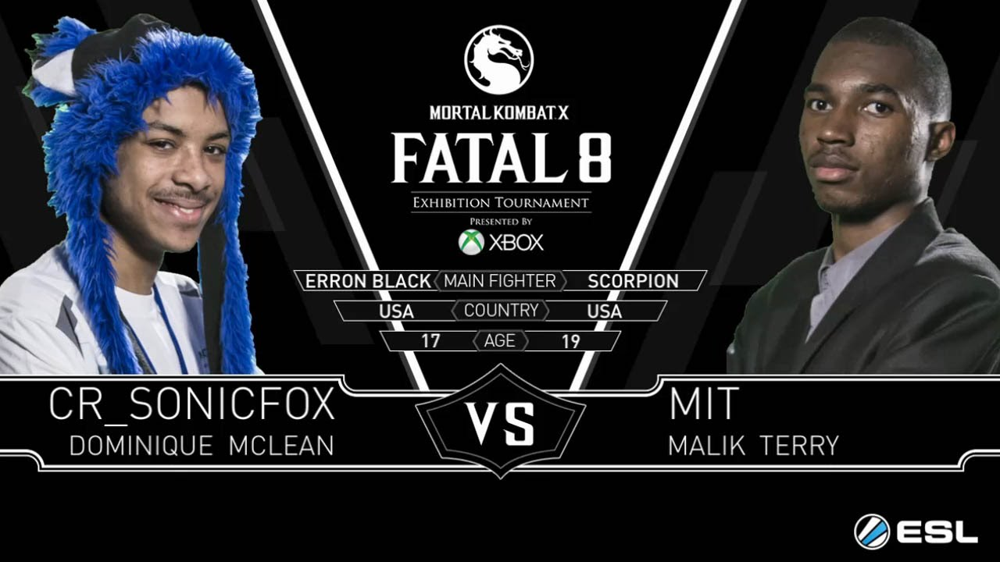
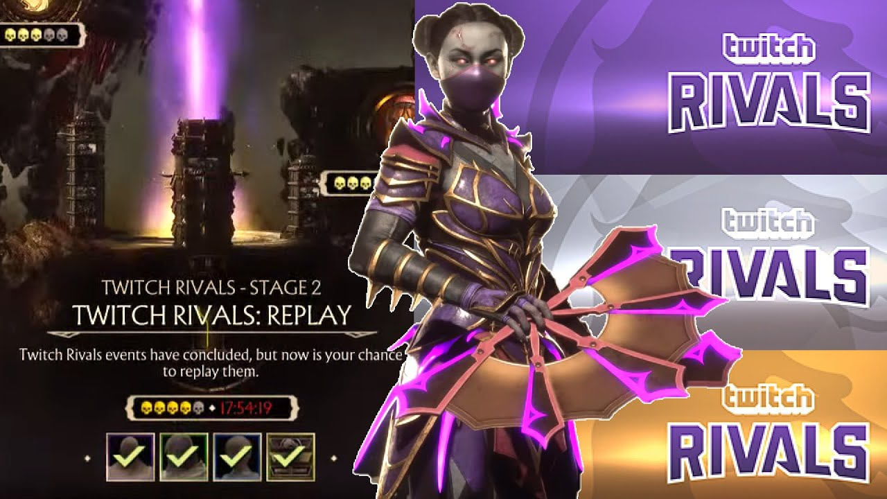
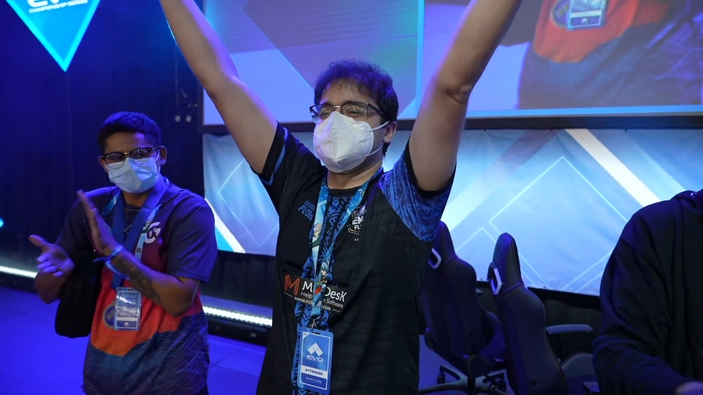
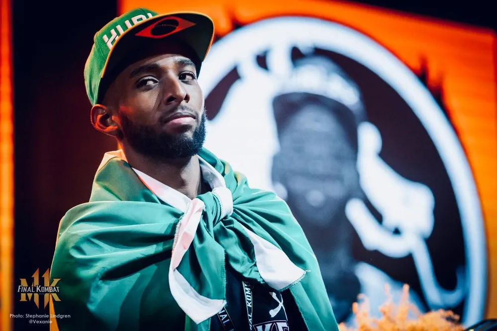

A história Kompetitiva
A história competitiva de Mortal Kombat é rica e tem evoluído ao longo de décadas, com competições
que abrangem desde os primeiros jogos da série até os títulos mais recentes. Aqui estão alguns pontos-chave na
história competitiva de Mortal Kombat:
Início das Competições (Década de 1990):
Desde o lançamento do primeiro Mortal Kombat em
1992, a
série gerou
competições informais entre jogadores que procuravam se destacar nos arcades. No entanto, as primeiras
competições de Mortal Kombat eram geralmente de natureza local.
EVO (Evolution Championship Series):
O torneio EVO é um dos eventos de jogos de luta
mais
prestigiados do mundo.
Mortal Kombat tem sido destaque no EVO desde o início da série. Títulos como Mortal Kombat 9 e Mortal Kombat X
tiveram presença regular no torneio. A comunidade competitiva de Mortal Kombat tem sido um pilar do EVO.
Competições Online:
Com a crescente popularidade dos jogos online, as competições de
Mortal Kombat
também
migraram para o ambiente digital. Plataformas como o ESL (Electronic Sports League) hospedaram torneios online
para jogadores de Mortal Kombat.
Pro Tour: A Warner Bros.
e a NetherRealm Studios introduziram um sistema de torneios
chamado "Pro
Tour" para o
Mortal Kombat 11. Este sistema consiste em várias competições de alto nível em todo o mundo, culminando em um
evento final, semelhante a uma liga profissional.
Personagens e Habilidades:
A competitividade de Mortal Kombat é moldada pelos
personagens e suas
habilidades.
Cada título da série introduz novos personagens, movimentos especiais e mecânicas de jogo. Os jogadores
competitivos estudam profundamente esses elementos para desenvolver estratégias e combos eficazes.
Cenário Internacional:
A competição de Mortal Kombat é verdadeiramente internacional,
com jogadores
talentosos
em todo o mundo. A rivalidade entre jogadores de diferentes regiões é um elemento comum nas competições.
Atualizações e Patches:
A NetherRealm Studios costuma lançar patches e atualizações
para equilibrar
o jogo com
base no feedback da comunidade e no desempenho dos personagens em torneios. Isso mantém a competitividade
saudável e atraente.
Transmissões ao Vivo:
As competições de Mortal Kombat são frequentemente transmitidas
ao vivo pela
Internet,
permitindo que fãs e jogadores acompanhem o jogo competitivo em tempo real. Isso ajuda a construir e manter uma
comunidade de espectadores.
A cena competitiva de Mortal Kombat é robusta e continua a evoluir à medida que novos jogos
da
série são
lançados e as tecnologias de transmissão e comunicação online melhoram. É uma comunidade apaixonada e
dedicada
que contribui para a longevidade da franquia.
Brasileiros no cenário
O cenário competitivo de Mortal Kombat tem uma presença considerável de jogadores brasileiros
talentosos. Esses jogadores competem em torneios locais e internacionais, ganhando reconhecimento e
representando o Brasil em competições de alto nível. Alguns jogadores brasileiros notáveis no cenário
competitivo de Mortal Kombat incluem:
killerXinok
nome de jogador de Bruno Henrique, é um veterano da cena competitiva
brasileira de
jogos de luta. Competindo desde 2012, Xinok, como costuma ser chamado, é conhecido por ser jogador das franquias
da produtora NetherRealm Studios, Injustice e Mortal Kombat, mas também competiu em jogos como Guilty Gear
-Strive- (Multi) e, recentemente, MultiVersus (Multi).
Entre suas maiores conquistas estão o título da Liga Latina de Injustice 2 de 2017 e o Combo Breaker de Mortal
Kombat X de 2018. Neste ano, ele adicionou mais uma grande conquista para sua coleção: Xinok conquistou a sétima
colocação na Evolution Championship Series 2022, popularmente conhecida como Evo, no torneio de Mortal Kombat 11
Ultimate.
Wellington de Castro, de 22 anos, mais conhecido como Konqueror,
é um jogador brasileiro de
Mortal Kombat 11, jogo de luta da NetherRealm. Considerado um dos melhores jogadores do país no game,
Konqueror conquistou em junho deste ano o bicampeonato da Liga Latina de Mortal Kombat. O atleta faz parte
da equipe Venom Flow, que conta com outros nomes da cena de jogos de luta, como Bruno "KillerXinok" Sousa,
também jogador de Mortal Kombat, e Renato "Didimokof" Martins, profissional de Street Fighter e Samurai
Shodown.
Ultimate.